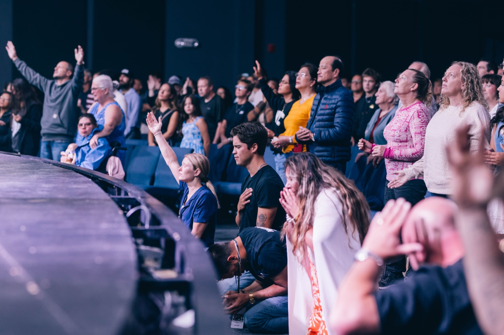
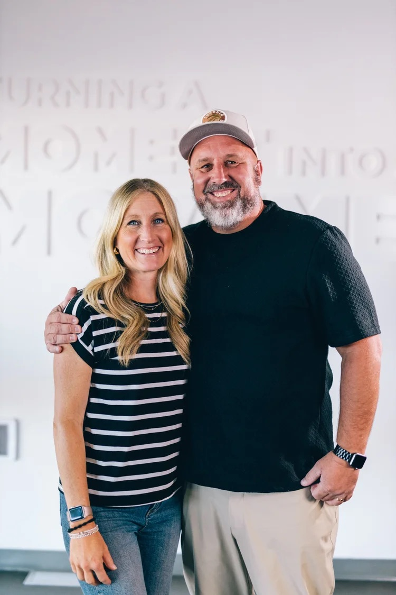

Session 01 / 04
Who is Movement Church?
Discover the story, vision, and heartbeat of Movement Church, and see how you can belong to a community making a difference.
Passionately loving God within reach of others while impacting our community for Christ with authenticity, excellence, and devotion, at the same time empowering people on their journey toward and with God.
Eight values, and together they spell our name.
We depend on the leading of the Holy Spirit and create space for Him to move in every area of our church.
We choose to serve and put the needs of others ahead of our own, following the example of Jesus.
We leverage creativity, technology, and media to communicate the gospel in fresh, compelling ways.
We create environments where people can experience God’s presence and respond to Him in heartfelt worship.
We believe life change happens best in community and as people use their gifts to serve others.
We bring our very best to God, seeing whole hearted service as an act of worship.
We intentionally lean young in our ministry, designing environments and making decisions with the next generation in mind. We invest in kids, students, and young adults, equipping them to follow Jesus and step into leadership now — not just someday in the future.
We communicate God’s Word with clarity and practicality so it transforms lives today.
Next Steps is how you move from simply attending to truly belonging at Movement Church. It’s a clear and simple path to help you learn more about who we are, discover how God uniquely designed you, and take your next step—whether that’s joining a team, finding community, or growing in your faith.

Discover the story, vision, and heartbeat of Movement Church, and see how you can belong to a community making a difference.
Learn about your true identity in Christ and what it means to live with purpose and confidence in Him.
Find out how you can use your gifts to serve, build relationships, and make an impact through the church.
Take practical steps to grow in faith, develop spiritual habits, and walk closer with God every day.
Movement Church has a rich history shaped by faith, vision, and a deep commitment to Woodstock.
What began decades ago as Calvary Church Woodstock was built by everyday people taking bold steps to serve their community and share hope. In 2020, we embraced a new name—Movement Church—to reflect a renewed vision: to help people find life in Jesus and live out their purpose.
Over the last decade, we’ve grown from a church of 300 to a thriving community of over 1,000. Along the way, hundreds have made the decision to follow Jesus, find belonging, and live with purpose as part of this movement.
And we’re just getting started. We’re passionate about creating a space where people of all backgrounds can belong, grow, and make a difference. If you’re looking for a place to be part of something meaningful, we’d love to welcome you.
At Movement Church, our beliefs are rooted in the Bible and shaped by our identity as a Pentecostal church. We hold to the core truths of the Christian faith and believe in the active work of the Holy Spirit in the lives of believers today.
Our faith is centered on Jesus Christ, the authority of Scripture, and the life-transforming power of the gospel. We embrace the Spirit-empowered life, believing that God still speaks, moves, and works through His people to bring hope and healing to the world.
We believe that the scriptures of the Old and New Testaments are the inspired Word of God and that men were moved by the Spirit of God to write the very words of Scripture. Therefore, we believe the Bible is without error. 2 Timothy 3:16–17 & 2 Peter 1:20–21
We believe that all people were created in the image of God to have fellowship with him but became alienated in that relationship through sinful disobedience. As a result, people are incapable of regaining a right relationship with God through their own efforts.
We believe in one personal God who exists eternally in three distinct persons: Father, Son, and Holy Spirit, equal in power, authority and glory.
We believe that the blood of Jesus Christ, shed on the cross, provides the only way for the forgiveness of sin. God freely offers salvation to those who place their faith in the death and resurrection of Christ as sufficient payment for their sin. Salvation cannot be earned, it is a gift from God.
We believe Jesus Christ to be the virgin-born Son of God who lived in flesh, died for the sins of the world, was buried, rose again bodily, and ascended to the Father.
We believe in the universal church, the body of Christ, of which Jesus Christ is the head. The members of the church are those who have trusted by faith in the finished work of Christ. The purpose of the church is to glorify God by loving him, obeying Him and bringing the gospel to the world.
We believe in the Holy Spirit who regenerates and indwells every believer in Jesus, assures us of our salvation, guides us into all truth, glorifies Jesus and convicts of sin, righteousness and judgment. He comforts us, gives us spiritual gifts, and empowers us for service.
We believe in the personal, visible return of Christ to the earth and the establishing of His Kingdom, in the resurrection of the body, and the final judgment. We believe that our eternal destination of either heaven or hell is determined by our response to the Lord Jesus Christ.
We believe that marriage is a lifelong covenant established by God between one man and one woman. It is a sacred union designed to reflect Christ’s relationship with His Church. We believe that sexual intimacy is a gift from God, reserved exclusively for marriage, and that all sexual activity outside of this covenant is contrary to God’s design.
We believe that God created humanity in His image as male and female, two distinct and complementary genders. Our sexuality is a gift from God that reflects His design and purpose. We believe that true human flourishing comes when we live within His created intent, honouring Him with our bodies and relationships.

“Within reach of those who feel far from God.”
Jeff and Amber Price serve as the Lead Pastors of Movement Church in Woodstock, Ontario. Their heart is to live a life that is within reach of those who feel far from God, while also equipping leaders who are passionate about making a difference in their communities.
They are known for their authentic communication style, using humour, real-life stories, and biblical truth to connect with people and inspire spiritual growth. Jeff brings a background in missions, evangelism, and leadership, along with a personal testimony of God’s power to deliver, heal, and restore. Amber leads with a deep love for people and a unique ability to build healthy teams and a strong sense of culture.
Together, they are committed to leading a vibrant church and raising their four incredible kids to live boldly for Jesus and become leaders in their generation.
Kids Ministry
Youth Ministry
Worship Leader
Care Pastor
Media & Communications
Production
Admin
Finances
Production
Tell us you’re coming and someone will be watching for you at the doors. Or just turn up on Sunday — that works too.